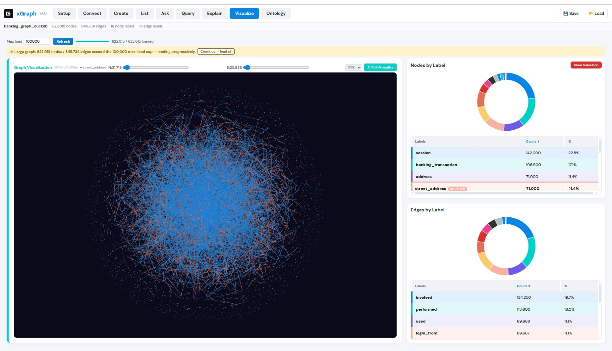
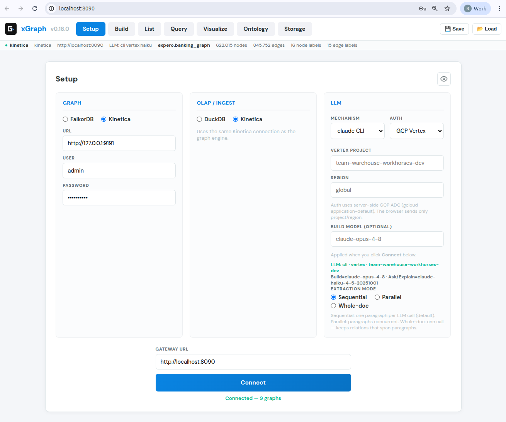
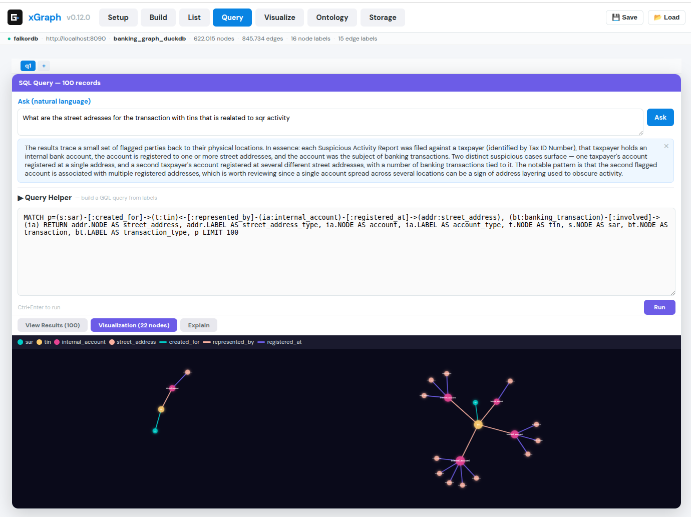
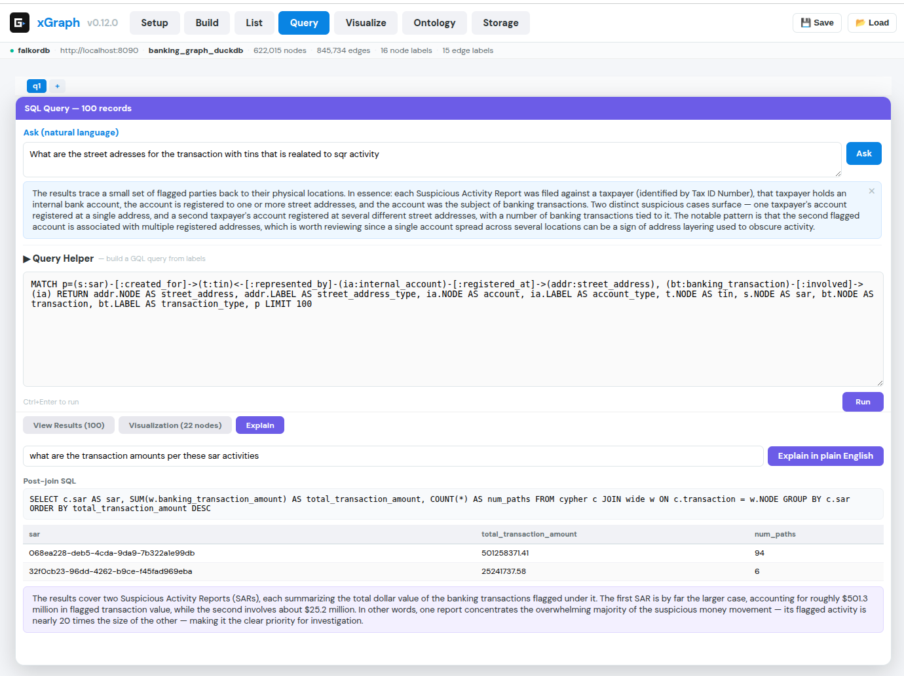
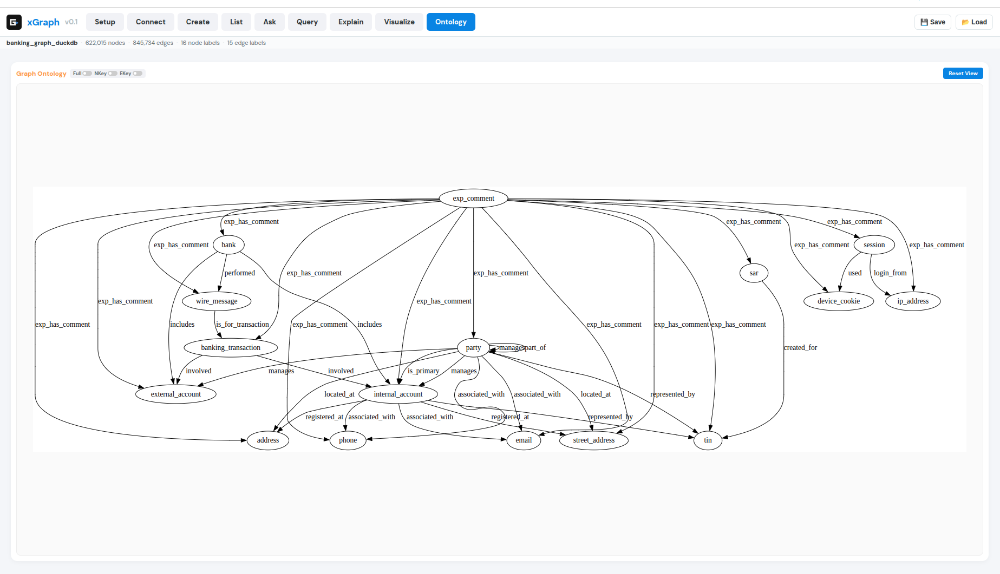

xgraph · Open source
Each graph engine ships its own console, query dialect and loading tools. xgraph puts one browser UI and one HTTP API in front of them, so building, querying, explaining and visualizing a graph is the same workflow on any engine, driven from one screen instead of a terminal.

In Setup you choose each one on its own. The gateway resolves the combination behind one API, so the frontend and every query stay engine-agnostic.
| Choice | Options | What it does |
|---|---|---|
| Graph engine | Kinetica · FalkorDB | Stores the graph and runs the traversal (GQL or openCypher). |
| OLAP / ingest | Kinetica · DuckDB | Joins, aggregations, and reading Parquet, CSV and S3. |
| LLM | Claude | Natural language to query, natural language to SQL, and plain-English explanations. |
FalkorDB + DuckDB + Claude is a fully on-premises route with no Kinetica. Kinetica + Kinetica is the validation baseline.

The action bar runs left to right:

Wide node tables bloat graph-engine memory when every column becomes a node property. xgraph keeps the graph skinny, holding only identity and the columns a query filters on, and leaves attribute-rich columns in Parquet or CSV. After a traversal returns a small set of ids, a post-join fetches just those rows' attributes.
Run a suspicious-activity traversal, then ask Explain: who has the most SAR activity, using the party name? xgraph reads the Cypher to learn which column holds party ids, maps "party name" to the real attribute column, and runs a read-only DuckDB join over the Parquet file:
SELECT w."party:party_name", COUNT(*) AS number_of_paths FROM cypher c JOIN wide w ON c.c_node = w.NODE GROUP BY 1 ORDER BY number_of_paths DESC
It then turns the ranked result into a plain-English answer. The count is computed by DuckDB, not estimated by the model, so the ranking is deterministic for a given result.

Extract turns unstructured text into a graph with an open-ended ontology. Three things keep it clean as documents accumulate:
Company. The learned aliases are saved, so they cost nothing next time.Company on the EntityType axis and AI on the Industry axis, so classifications aren't lost.
The code is on GitHub: github.com/karametebkaan/xgraph. It ships with a banking demo graph, so you can explore a real graph on first launch.
git clone https://github.com/karametebkaan/xgraph && cd xgraph ./scripts/unzip-data.sh # banking demo data cd backend && python3 -m venv .venv && ./.venv/bin/pip install -r requirements.txt cp .env.example .env && cd .. docker run -p 6379:6379 -p 3000:3000 falkordb/falkordb:latest ./xgraph start # UI + API on http://localhost:8090
What you need: Python 3 and Docker (for FalkorDB), or a Kinetica instance. Ask, Explain and Extract use Claude, through an Anthropic API key or the claude CLI. Stop the gateway with ./xgraph stop.
The full HTTP API, the extraction model and the developer notes are in the README on GitHub.